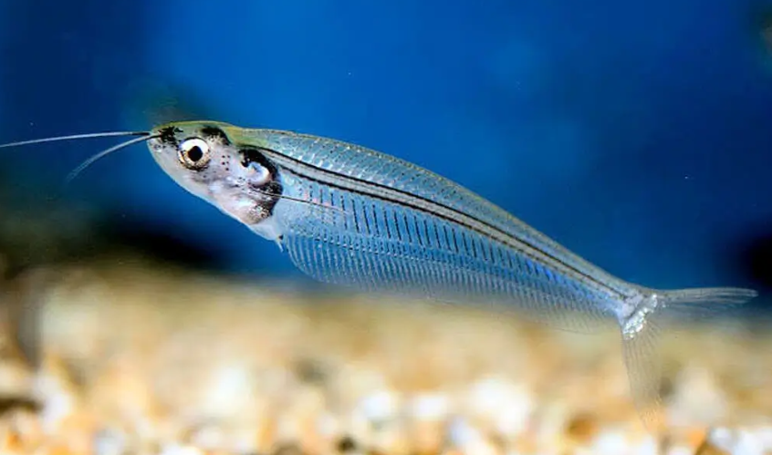

Systématique
- Ordre : Siluriformes
- Famille : Siluridae
- Genre : Kryptopterus
- Espèce : K. minor

Kryptopterus minor est une espèce souvent citée dans les livres anciens, mais en réalité très rare en aquariophilie. La quasi-totalité des "poissons de verre" vendus dans le commerce sont en fait des Kryptopterus vitreolus.
Le vrai K. minor mesure environ 6 à 7 cm. Il se distingue de K. vitreolus par une transparence moins parfaite (corps souvent plus laiteux ou trouble), une tête proportionnellement plus petite et un profil dorsal légèrement différent.
C'est un poisson délicat, typique des marais tourbeux d'Asie, qui demande des conditions d'eau spécifiques (eau noire).
Comme ses cousins, c'est un poisson pélagique (nageant en pleine eau) et strictement grégaire. Il doit être maintenu en groupe de 8 individus minimum pour se sentir en sécurité.
Il nage souvent incliné tête vers le haut, ondulant sur place face au courant. C'est une espèce timide, qui ne supporte pas la concurrence alimentaire de poissons trop vifs et qui stresse facilement si l'environnement est trop lumineux ou dépourvu de cachettes.
Mode : ovipare.
Aucune reproduction confirmée et documentée en aquarium pour cette espèce spécifique. Dans la nature, elle est probablement déclenchée par la saison des pluies (crue), impliquant une baisse de la dureté de l'eau et de la température.
Dimorphisme sexuel : Quasiment invisible à l'œil nu. Les femelles gravides peuvent présenter un abdomen légèrement plus gonflé.
Espérance de vie : Estimée entre 4 et 6 ans.
Il est endémique de l'île de Bornéo (province de Kalimantan en Indonésie). Il vit exclusivement dans les marais tourbeux et les eaux noires (blackwater), où l'eau est teintée couleur thé par les tanins, très acide et très douce.
Répartition

Origine naturelle :
- Asie du Sud-Est (Insulaire).
- Indonésie.
- Bornéo (Kalimantan occidental).
Paramètres de maintenance
Température : 24 à 28 °C.
pH : 4,0 à 6,5 (espèce acidophile, tolère mal l'eau basique).
GH : 1 à 8 °dGH (eau très douce impérative).
Pollution : Intolérant aux nitrates et nitrites.
Volume conseillé : Minimum 80 à 100 L. Nécessite une eau calme, filtrée sur tourbe pour reproduire son milieu naturel.
Régime alimentaire
Régime : micro-prédateur / insectivore.
Il se nourrit de zooplancton et d'insectes en suspension.
En aquarium, il ignore souvent la nourriture tombée au fond. Il faut privilégier les proies vivantes (daphnies, artémias) ou congelées qui restent en suspension dans le courant.